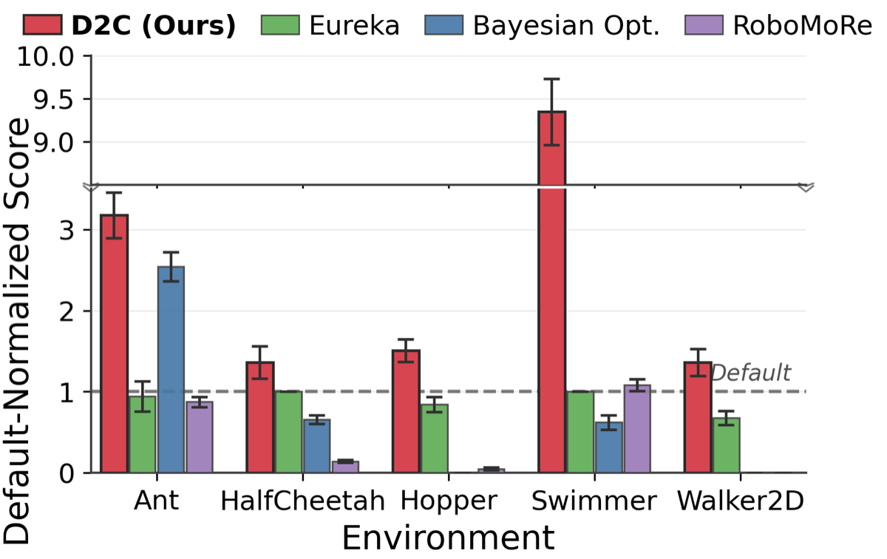

Why it matters왜 중요한가
Co-design is hard because body and controller are non-linearly coupled — and single-agent LLMs reuse familiar patterns exactly where diversity is needed.
공동설계가 어려운 이유는 몸체와 제어기가 비선형적으로 얽혀 있기 때문이며, 단일 에이전트 LLM은 다양성이 가장 필요한 지점에서 익숙한 패턴만 반복한다.
Lengthen a leg and the optimal gait changes; add an energy penalty and an agile body crawls. Optimizing morphology under a fixed reward yields fragile bodies; tuning reward for a fixed body caps performance. D2C reframes this as a multi-agent communication problem: instead of one model generating everything, role-separated agents debate — proposing, critiquing, and revising — so controllability flaws are caught before expensive simulation. Crucially, the "judgment" that ends each round is not an LLM verdict but the simulator's task score, keeping the debate honest.
다리를 늘이면 최적 보행이 바뀌고, 에너지 페널티를 더하면 민첩하던 몸이 기어 다닌다. 고정 보상 아래 몸체만 최적화하면 취약한 몸이 나오고, 고정 몸체에 맞춰 보상만 조정하면 성능 한계가 생긴다. D2C는 이를 멀티에이전트 통신 문제로 재정의한다 — 한 모델이 전부 생성하는 대신 역할이 분리된 에이전트들이 논쟁(제안·비판·수정)하여, 비싼 시뮬레이션 이전에 제어 가능성 결함을 잡아낸다. 핵심은 매 라운드를 끝내는 "판정"이 LLM의 평결이 아니라 시뮬레이터 과제 점수라는 점으로, 논쟁이 거짓되지 않게 한다.

By the numbers핵심 숫자
(47084 vs 14886)기본 Ant 대비 점수
(47084 vs 14886)
(8639 vs 926)Swimmer 이득
(8639 vs 926)
(mean ~24%)논쟁 vs zero-shot
(평균 약 24%)
transfers to default bodyD2C 보상이 기본 몸체로
전이된 과제
(speed · stability · efficiency · novelty)다원적 판정관
(속도·안정성·효율·참신성)
(5 rounds × 16 candidates)시드당 학습 정책
(5라운드 × 16후보)
Results — co-design beats decoupled search결과 — 공동설계가 분리 탐색을 능가
| Morphology / Reward | Ant | Swimmer | Walker2D | Hopper |
|---|---|---|---|---|
| Default / Default | 14886 | 926 | 9596 | 4183 |
| Default / D2C | 17402 | 904 | 11027 | 5383 |
| D2C / D2C | 47084 | 8639 | 13062 | 6257 |
In one diagram한 장의 그림
Idea: structured debate as the search operator아이디어: 탐색 연산자로서의 구조화된 논쟁
Thesis–Antithesis–Synthesis
Two role-separated agents (design vs. control, both GPT-5.2) run a Hegelian loop: propose a body, critique it, revise it. Critiquing before simulation prunes unstable designs cheaply. Each round samples multiple design × reward variants, yielding 16 synthesis candidates.
두 개의 역할 분리 에이전트(설계 vs 제어, 둘 다 GPT-5.2)가 헤겔식 루프를 돈다: 몸체 제안 → 비판 → 수정. 시뮬레이션 이전에 비판함으로써 불안정한 설계를 저렴하게 걸러낸다. 매 라운드 다수의 설계 × 보상 조합을 샘플해 16개 합(synthesis) 후보를 만든다.
Pluralistic judges + archive
A panel of four judges — speed, stability, efficiency, novelty — gives multi-objective critique that steers away from narrow optima (ablations show higher Pareto hypervolume). A hall-of-fame archive of top pairs survives bad rounds, making D2C robust to individual LLM failures.
네 명의 판정관(속도·안정성·효율·참신성)이 다목적 비판을 제공해 좁은 최적점에서 벗어나게 한다(어블레이션에서 Pareto 초부피 증가 확인). 상위 쌍을 보관하는 명예의 전당 아카이브 덕분에 나쁜 라운드를 견디고, 개별 LLM 실패에도 강건하다.
How it works어떻게 작동하나
- Propose (thesis)제안 (정)The design agent, given the current body, task, recent metrics, and an archive digest, edits exposed morphology parameters with a short rationale.설계 에이전트는 현재 몸체·과제·최근 지표·아카이브 요약을 받아, 노출된 형태 파라미터를 수정하고 짧은 근거를 단다.
- Critique + reward (antithesis)비판 + 보상 (반)The control agent flags controllability risks, then writes a reward function r tailored to the revised body m′ as a code snippet (Eureka-style template).제어 에이전트가 제어 가능성 위험을 지적한 뒤, 수정된 몸체 m′에 맞춘 보상 함수 r을 코드 스니펫으로 작성한다(Eureka식 템플릿).
- Simulate & judge시뮬레이션 & 판정Each (m, r) pair trains a policy in Brax under a fixed RL budget; the four judges reason over metrics for the top candidate to give multi-objective feedback.각 (m, r) 쌍은 고정 RL 예산으로 Brax에서 정책을 학습하고, 네 판정관이 최고 후보의 지표를 추론해 다목적 피드백을 준다.
- Archive & repeat보관 & 반복Winners ranked by simulator score S enter the hall-of-fame; after K=5 rounds the best stored pair is returned. ~$0.50 LLM cost/round; RL dominates wall-clock.시뮬레이터 점수 S로 순위 매긴 승자가 명예의 전당에 들어가고, K=5 라운드 후 최고 저장 쌍을 반환한다. 라운드당 LLM 비용 약 $0.50, 벽시계 시간은 RL이 지배한다.
What to take away그래서, 가져갈 것
Debate is a real search operator. Under identical candidate budgets, iterative critique-then-revise beats one-shot generation by 18–35% — the gains come from the protocol, not extra compute.
논쟁은 진짜 탐색 연산자다. 동일한 후보 예산에서 반복적 비판-수정이 단발 생성을 18~35% 능가 — 이득은 추가 연산이 아니라 프로토콜에서 나온다.
Ground the judgment in physics. Unlike LLM-judge debate, D2C lets the simulator score decide winners; judges only shape exploration, so persuasiveness can't override empirical performance.
판정을 물리에 근거시켜라. LLM 판정 논쟁과 달리 D2C는 시뮬레이터 점수로 승자를 정하고, 판정관은 탐색만 조형한다. 그래서 말솜씨가 실증 성능을 뒤집을 수 없다.
Co-design discovers transferable rewards. D2C rewards improve even the default body on 4/5 tasks, suggesting the shaping captures locomotion principles, not morphology-specific hacks.
공동설계는 전이 가능한 보상을 발견한다. D2C 보상은 4/5 과제에서 기본 몸체까지 향상시켜, 형태 특화 꼼수가 아니라 보행 원리를 포착함을 시사한다.
Robust to weak LLMs. GPT-5-nano/mini/5.2 all reach 3.18–3.60× on Ant (p>0.19); the archive absorbs failures, though small models waste compute (49.2% vs 15.8% degenerate candidates).
약한 LLM에도 강건. GPT-5-nano/mini/5.2 모두 Ant에서 3.18~3.60배 달성(p>0.19). 아카이브가 실패를 흡수하지만, 작은 모델은 연산을 낭비한다(퇴화 후보 49.2% vs 15.8%).